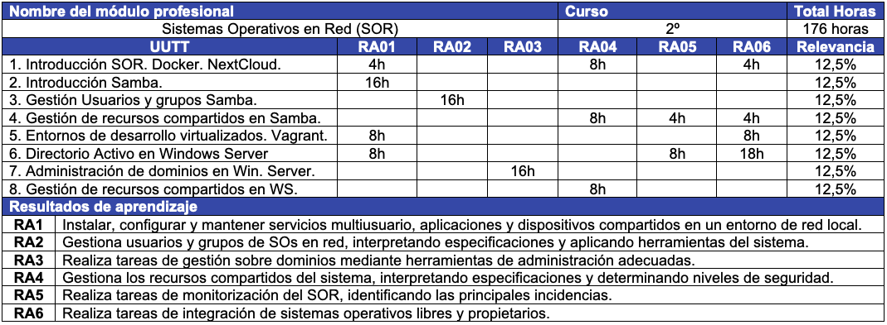
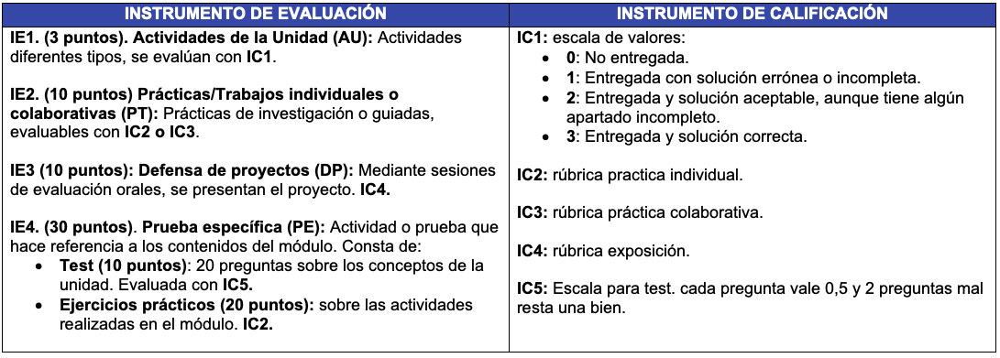

Sistemas Operativos en Red¶
Estos apuntes desarrollan los recursos didácticos del módulo de Sistemas Operativos en Red (SOR), el cual se imparte en el IES Severo Ochoa. Dicho módulo se realiza durante el segundo curso del ciclo formativo de grado medio de Sistemas Microinformáticos en Red (SMR), cuyas enseñanzas mínimas se definen en el RD 1691/2007 y se concretan en el currículo de la ORDEN de 29 de julio de 2009.
Cabe destacar las siguientes características del módulo SOR:
- En la modalidad presencial La duración del módulo es de 176 horas lectivas, a razón de 8 horas semanales.
- En el caso de semipresencial se realizaran 4 horas tutorías colectivas y 4 horas de tutorías telemáticas semanalmente, de las cuales las tutorías colectivas se imparten 2 horas por la mañana y 2 horas por la tarde.
¿Qué voy a aprender?¶
- Instalar, configurar y mantener servicios multiusuario, aplicaciones y dispositivos compartidos en un entorno de red local, atendiendo a las necesidades y requerimientos especificados.
- Instalar y configurar recursos compartidos (acceso a directorios, impresión, accesos remotos, entre otros) en condiciones de calidad.
- Administrar usuarios de acuerdo a las especificaciones de explotación para garantizar los accesos y la disponibilidad de los recursos del sistema.
- Gestionar los recursos de diferentes sistemas operativos (programando y verificando su cumplimiento).
- Aplicar los protocolos y normas de seguridad, calidad de los servicios instalados.
- Mantener un espíritu constante de innovación y actualización en el ámbito del sector informático.
Resultados de aprendizaje¶
Un Resultado de Aprendizaje (RA): "es una declaración de lo que el estudiante se espera que conozca, comprenda y sea capaz de hacer al finalizar un periodo de aprendizaje".
Es importante conocer los RAs ya que la evaluación de la formación profesional se basa en la valoración dichos resultados de aprendizaje. Los Resultados de Aprendizaje de SOR son:
- Instala sistemas operativos en red describiendo sus características e interpretando la documentación técnica.
- Gestiona usuarios y grupos de sistemas operativos en red, interpretando especificaciones y aplicando herramientas del sistema.
- Realiza tareas de gestión sobre dominios identificando necesidades y aplicando herramientas de administración de dominios.
- Gestiona los recursos compartidos del sistema, interpretando especificaciones y determinando niveles de seguridad.
- Realiza tareas de monitorización y uso del sistema operativo en red, describiendo las herramientas utilizadas e identificando las principales incidencias.
- Realiza tareas de integración de sistemas operativos libres y propietarios, describiendo las ventajas de compartir recursos e instalando software específico.
Mapa General de la Programación Didáctica¶
A modo de resumen de la Programación didáctica (PD) de SOR, se muestra la secuenciación de las Unidades de trabajo planificadas y los Resultados de aprendizaje (RAs) tratados en cada una de dichas unidades.

Planificación Unidades de Trabajo¶
Las unidades de trabajo (UT) se han planificado según el calendario escolar 2023/2024, siguiendo la distribución en quincenas para las UTs indicada en la ORDEN 30/2002, de 12 de mayo. Las temporalización de las UTs de SOR se organiza de la siguiente forma:
Primera evaluación¶
- Introducción SOR. Docker. NextCloud. (16 horas, del 25/09/23 al 06/10/23)
- Introducción a los sistemas operativos en red.
- Virtualización.
- Contenedores. Docker
- NextCloud.
- Introducción Samba. (16 horas, del 10/10/23 al 20/10/23)
- Instalación Samba.
- fichero configuración, Creación directorio compartido.
- Gestión Usuarios y grupos Samba. (16 horas, del 23/10/23 al 3/11/23)
- Perfiles de usuario y grupos.
- Integración de permisos.
- Gestión de recursos compartidos en Samba. (16 horas, del 7/11/23 al 18/11/23)
- Creación de de recursos compartidos.
- Monitorización de incidencias.
- Entornos de desarrollo virtualizados. Vagrant. (16 horas, del 21/11/23 al 2/12/23)
- Escenarios heterogéneos, Protocolos para redes heterogéneas, servicios de recursos compartidos.
- creación de entronos de desarrollo virtualizados mediante Vagrant.
Segunda evaluación¶
- Directorio Activo en Windows Server (16 horas, del 8/01/24 al 19/01/24)
- Active Directory, configuración básica Windows Server.
- Active Directory, Instalación AD, Creación estructura empresa.
- Servicio Monitorización en Windows Server.
- Administración de dominios en Windows Server (16 horas, del 22/01/24 al 2/02/24)
- Creación de dominios.
- Administración de dominios.
- Gestión de recursos compartidos en Windows Server (16 horas, del 21/02/24 al 02/03/24)
- Permisos, directivas de grupo, perfiles y relaciones de confianza.
Evaluación¶
La evaluación es un proceso continuo y formativo basado en la calificación de competencias a través de los resultados de aprendizaje. En el caso de SOR se realiza la media de las calificaciones de cada RA.
IMPORTANTE
- Por lo tanto LA CALIFICACIÓN FINAL DEL MÓDULO se obtendrá de la media ponderada de las calificaciones de cada RA.
Procedimientos de Evaluación¶
- La calificación de cada RA se obtendrá de la media ponderada de las actividades formativas trabajadas. Para ello se utilizan los siguientes procedimientos de evaluación:

Evaluaciones Trimestrales¶
-
Primer trimestre: la calificación se obtiene de la media ponderada simple de las actividades formativas evaluables trabajadas durante el primer trimestre, por lo tanto NO HABRÁ EXAMEN.
-
Segundo trimestre: media ponderada simple de todas las actividades formativas, incluyendo la presentación individual del "Proyecto de Módulo" que se realizará en lugar del examen de la 2ª evaluación.
Evaluaciones Ordinaria y Extraordinaria¶
En el caso de no superar algún resultado de aprendizaje durante la evaluación continua:
IMPORTANTE
- En primera instancia se recupera el RA en el examen de convocatoria final Ordinaria.
- En segunda instancia si todavía no se ha superado el RA en la Ordinaria se debe aprobar en examen final de la convocatoria Extraordinaria.